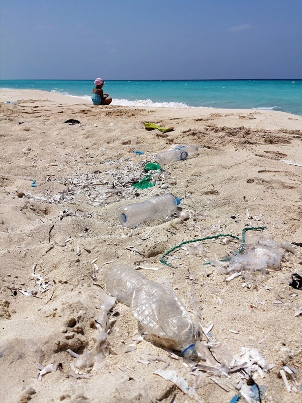
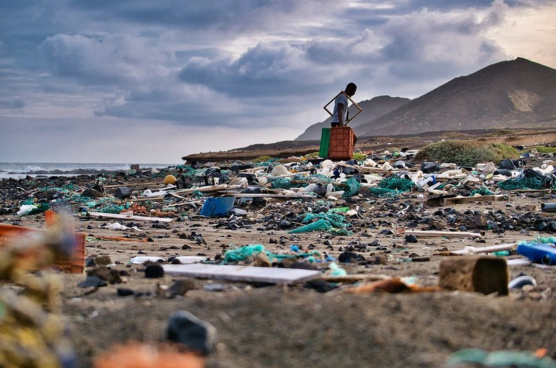
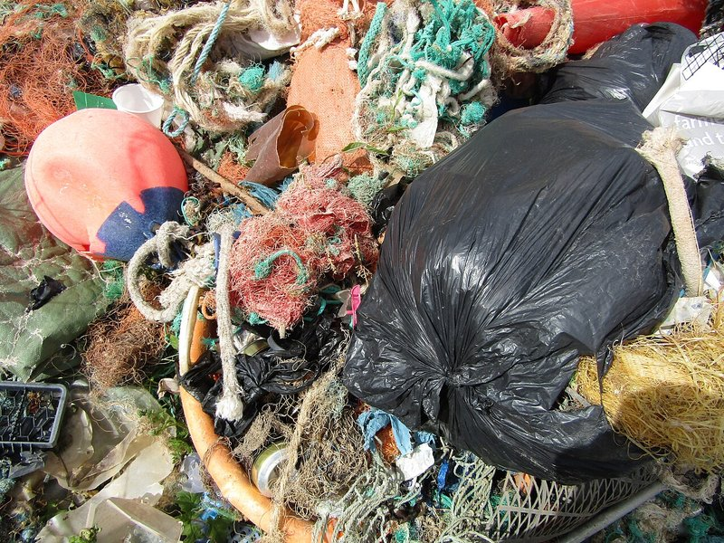
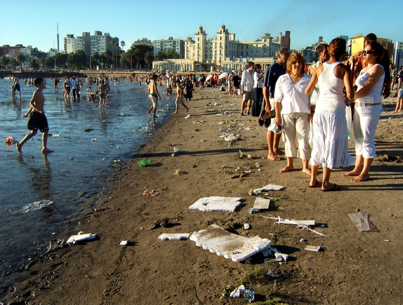
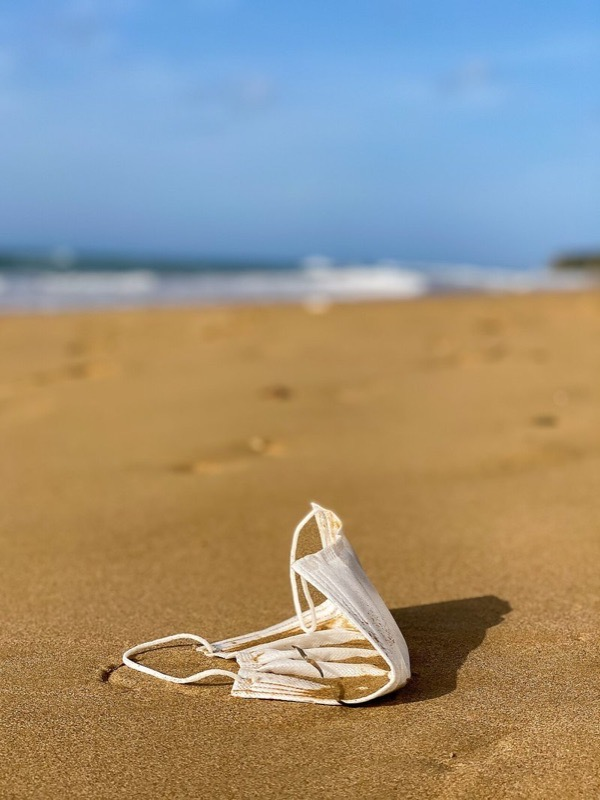

認識
海廢分類
從台灣四面海岸的整體輪廓，走到家門口的月牙灣。 看見海廢長什麼樣，知道它從哪裡來、又該怎麼分類。
上一節你看見了台灣海岸的整體面貌。這一節我們把鏡頭拉近——拉到漁光島月牙灣，拉到我們學校旁邊的這片海。你會學會把每年漂上岸的兩百多種「客人」分成 5 大類，再對照國際標準的 ICC 20 項，最後在分類遊戲裡驗收自己的進步。
七個階段，跟著這條線走
 01
01
Step 01 · 銜接全台灣
台灣海廢全圖
前 10 名、五大類分布、四區差異、20 年趨勢—— 你站著的這條海岸線到底有多髒。
看數據 →
02
Step 02 · 前測
分類遊戲（前測）
輸入班級座號，先玩一輪 30 題拖拉題。 看看你目前對海廢分類的掌握程度。
立即測試 →
03
Step 03 · 認識實物
海邊真的會撿到的東西
31 張真實海岸照片，按類別篩選。 先看清楚要分類的對象長什麼樣。
逐一辨識 →
04
Step 04 · 在地聚焦
安平蚵棚——你家旁邊的故事
每年 6 萬顆保麗龍浮具流失、200 年都不會消失。 月牙灣為什麼長這樣？跟蚵農、跟我們吃的蚵仔煎有什麼關係？
進入主場 →
05
Step 05 · 五大類
5 大類分類
飲料容器、食物包裝、漁業用具、個人衛生、其他。 從「人為什麼會丟」的角度看分類最大的好處。
逐章閱讀 →
06
Step 06 · 國際標準
ICC 20 項細表
點開 20 張卡片，看每一項在台灣有多常見。 下次淨灘記錄表，就是用這 20 項。
展開卡片 →
07
Step 07 · 後測
分類遊戲（後測）
同樣 30 題，再玩一次。 系統會自動比對你的前測，告訴你進步多少。
驗收進步 →還有更多故事與行動


Learning Outcomes學完之後
- 看得懂台灣海廢全貌——前 10 名、四區分布、20 年的趨勢線。
- 能把海廢分到5 大類，並對應到國際 ICC 20 項。
- 知道安平在地問題——蚵棚保麗龍每年 6 萬顆、200 年不消失。
- 分類遊戲前測 vs 後測能看到自己的進步。
- 想得到個人與家庭層級的行動，能在放學後就開始。
臺南市安平區億載國民小學 · PBL 海洋守護者 2.0 · 模組一 | 教師資源